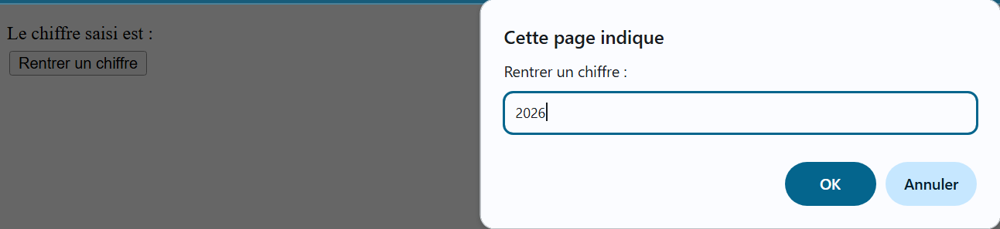
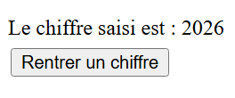

TD - Bases du JavaScript
⚙️ Interaction DOM : Manipulation des Propriétés CSS et Événements
1. Modification des Propriétés CSS avec JavaScript
La manière la plus simple et la plus utilisée pour modifier le CSS
d'un élément HTML est l'utilisation de la propriété
style.
1.1 Accès à la propriété style
Pour accéder à la propriété style d'un élément, on
procède par chaînage :
// Accès à la propriété style du corps du document (body)
document.body.style
// On écrit ensuite le nom de la propriété CSS et le paramètre.
document.body.style.color = 'blue'; // Modifie la couleur du texte en bleu
Le sélecteur 'document.body' concerne tout ce qui est placé entre les balises "<body>" du code HTML.
1.2 Modification du contenu HTML (innerHTML)
Pour modifier le contenu d'un élément HTML (tel qu'un paragraphe ou un
'div'), on utilise la propriété innerHTML.

Si l'utilisateur saisit un chiffre, celui-ci peut être affiché dans un paragraphe:

L'opération se fait en deux étapes : Sélection de l'élément, puis modification du contenu :
// 1. Sélection de l'élément HTML avec l'ID "MonId"
// 2. Modification du contenu HTML par la valeur de la variable 'chiffre'
document.getElementById("MonId").innerHTML = chiffre;
-
Sélection :
'document.getElementById("MonId")'sélectionne l'élément HTML ayant l'attribut 'id' égal à "MonId". -
Contenu :
'.innerHTML=chiffre'modifie le contenu HTML de cet élément sélectionné.
2. Récupération des Propriétés CSS (getComputedStyle())
La propriété 'style' ne permet pas de récupérer
les valeurs CSS définies dans les feuilles de style externes.
Pour pallier cette limitation, on utilise la fonction
getComputedStyle(). Cette fonction permet de récupérer la valeur de
n'importe quel style CSS, qu'il soit déclaré en
ligne, dans une feuille de style ou même calculé automatiquement.
Exemple d'utilisation
<style type="text/css">
#text { color: red; }
</style>
<script>
var text = document.getElementById('text');
var color = getComputedStyle(text, null).color;
alert(color); // Affiche la couleur calculée (par exemple "rgb(255, 0, 0)")
</script>
3. Exercice Pratique : Redimensionnement Dynamique d'Image
L'objectif est de contrôler les dimensions d'une image (ici le logo MMI) à l'aide de boutons.
Structure HTML de base de l'image
<div align="center" id="cadre">
<img src="logo_MMI_Beziers.jpg" id ="image" width="400" height="400" alt=""/>
</div>
Tâches à réaliser
- Créer deux fonctions ('agrandir' et 'reduire') qui changeront la taille du logo de 10% à chaque clic.
- Limiter la taille : implémenter une logique qui empêche l’image de devenir trop petite (minimum 50px) ou trop grande (maximum 1200px).
- Réinitialisation : ajouter un bouton "Réinitialiser" pour revenir à la taille d’origine (400x400).
Pour réaliser cela, il est conseillé de récupérer la largeur actuelle de l'image (en pixels) et d'ajouter/retirer la valeur correspondante (par exemple, 10% de 400px = 40px).
4. Pour aller plus loin... (Bonus)
Permettre un redimensionnement via une barre de défilement (slider).
- Ajouter un pour permettre un redimensionnement plus précis et interactif.
-
Ceci introduit la gestion de l'événement
'input'HTML. - Bonus : afficher la valeur d’agrandissement ou de réduction en %.